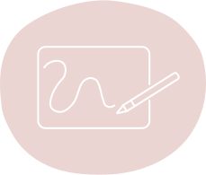
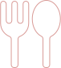

ABOUT
私について
梅木 沙也加
Umeki Sayaka
北海道生まれの北海道育ちです。
前職は管理栄養士をしており、メニュー表や行事カードなどをよく手作りしていました。その際にデザインすることが楽しい感じていました。その後、広告運用やアナリティクス解析の仕事を手伝う機会があり、Webデザインに興味を持つようになりました。そして2023年にWebデザインのスクールに入校し、2024年よりWebデザイナーとして活動しています。
また、2024年に生成AIパスポートを取得しました。
SERVICE
サービス
-
デザイン
DESIGN
ヒアリングを通して、お客様の想いや課題を見極め、適切なデザインを提案します。届けたい人に対して、わかりやすく使いやすいデザインを心がけています。
使用ツール
Illustrator・Photoshop
-
コーディング
CODING
HTMLとCSSを用いて、デザインに基づいたコーディングを行います。また、JavaScriptを用いて、簡単な動きを付けることも可能です。
使用ツール・言語
HTML・CSS・Javascript・VSCode・Dreamweaver
ホームページやランディングページの制作が可能です。デザイン、コーディング、アップロードまで一貫して対応いたします。デザインのみ、コーディングのみのご依頼も可能です。また、Webデザインだけでなく、名刺やチラシなどの印刷物の制作も承っております。
HOBBIES
すきなこと
-
01

お菓子づくり
泡立てる行程が好きです。ふわふわのメレンゲをみると癒されます。シンプルな材料で作った素朴なお菓子が好きです。
-
02
食べること
前職が管理栄養士だったこともあり、食事に関心があります。好きなごはんはスープカレーです。デザートも大好きです。
-
03
漫画を読むこと
小さい頃から漫画を読むことが好きです。今でも空いた時間があるとよく読みます。おすすめの作品があれば教えてください。